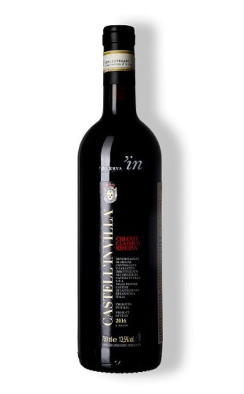

o símbolo do Castell'In Villa, é seu Chianti distinto, com uma seleção especial das melhores parcelas entre 300-360m de altitude das vinhas mais velhas de cerca de 20-30 anos em diversas exposições. Somente produzido em ano especiais. O solo é um mistura com aluviais com cascalho, calcário, argila e areia. A fermentação é natural com temperatura controlada em inox por até 30 dias e amadurece em grandes barris de carvalho da Eslavônia por até 42 meses, engarrafado sem filtração onde passa mais 12 meses. Um Chianti Clássico Riserva profundo, intenso e cheio de elegância.
Acidez total: 86 meq/L - 6,45g Tartárico - pH: 3,4 - Açúcar residual: 2,2g/L - Acidez Volátil: 12,50 meq/L - SO² Total: 57mg/L - Extrato Seco: 30,3 g/L
País
Itália
Harmonizações
Bisteca fiorentina, carnes grelhadas e de caça, queijos maduros
Região
Toscana
Produção
Orgânico
Safra
2016
Tamanho
750 ml
Uva
Sangiovese
Teor Alcoólico
13,91%
Castell'in Villa é uma antiga vila medieval em Castelnuovo Berardenga no sul de Chianti Clássico Essa linda propriedade próxima a Siena, cercada de florestas e vinhedos, no alto de uma belíssima colina em meio ao relevo clássico da Toscana era um assentamento medieval de 1176. Pela sua localização e altitude foi construída uma torre ali para controlar Firenze.
Em 1968 Riccard e Coralia Pignatelli dela Leonessa, uma Princesa, compraram os mais de 300 hectares dessa propriedade. Após muito cuidado na restauração para manter esse ambiente o mais próximo do original, incluindo sua linda torre em que a princesa fez seu lar chegou a hora de revolucionar os vinhos feito por lá.
Esse terroir diverso e perfeito, com as encostas e diferentes formações de solo, que incluem os clássicos Albarese e a Tuffa Sienese, que traz um solo arenoso com partes argilo calcárias é plantado com 54 hectares de vinhedos e 26 hectares de oliveiras. A ideia é deixar a imensa maioria da superfície com a vegetação natural, mantendo a rica biodiversidade local.
Seus vinhedos são separados em 8 parcelas e desde sempre trabalhados de forma orgânica. Essas parcelas estão entre 250m-350m de altitude e apenas uma delas é engarrafada sozinha, a linda Poggio delle Rose. A seleção de uvas é muito rígida e mesmo com mais de 50 hectares sua produção fica em torno de 100mil garrafas ano. Na vinícola Coralia sempre achou cansativo o estilo cheio de madeira e extração e decidiu fazer a tradicional fermentação natural e macerações que trazem estrutura, mas mantenha a elegância.
Seus vinhos são claramente feitos para guarda e mantém um estilo elegante mesmo assim, acidez, taninos, extração na medida e um toque savory, terroso sensacional. Sempre foram reconhecidos como alguns dos Chianti mais longevos e realmente “Clássicos”. Além disso, eles se aventuram em alguns “Supertoscanos” como os seus Santacroce e Marcolfo com Cabernet Sauvignon.
Castell’in Villa é uma verdadeira joia de Chianti Clássico!